몇 해가 흘렀다. 미아는 배우고 일하며, 작은 사무실 하나를 빌렸다.01미아: 카메라 앞에서는 제 경험을 말했어요.02
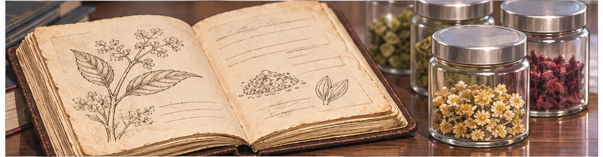
미아: 이제는 다른 사람의 경험에도 책임지고 싶어요.03
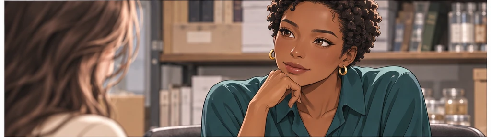
나디아 브룩스: 그러려면 좋아 보이는 것 말고 확인할 게 많아요.04미아는 대표라는 호칭보다 모르는 질문을 먼저 받았다.05
첫 팀의 식탁
처음 모인 팀은 작은 식탁 하나에 모두 앉을 수 있었다.06
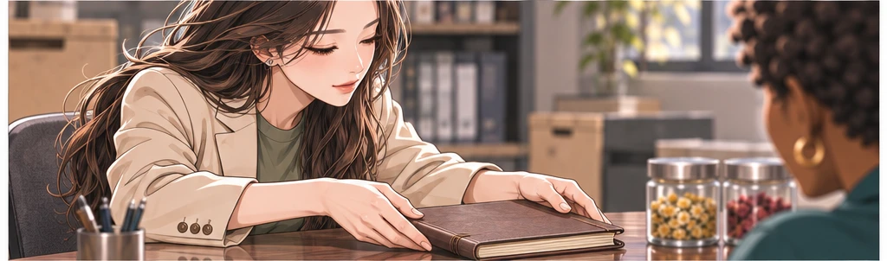
미아: 불편하다는 말을 숨기지 않는 회사였으면 해요.07
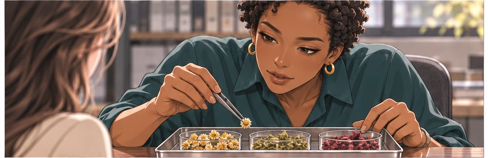
나디아 브룩스: 그 말을 제품에도 적용해야죠.08
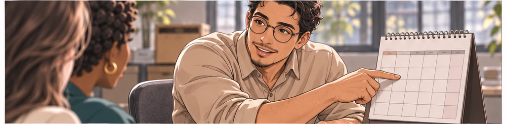
다니엘 모랄레스: 시간이 걸려도 계획을 같이 세워봅시다.09꿈을 설명하는 일과 일을 나누는 일은 달랐다.10
잘 모르는 대표
미아는 개발실에서 듣는 시간이 더 많았다.11미아: 제가 좋아한다고 다른 사람도 편한 건 아니겠죠.12나디아 브룩스: 그래서 다양한 사용 경험과 확인 과정이 필요해요.13
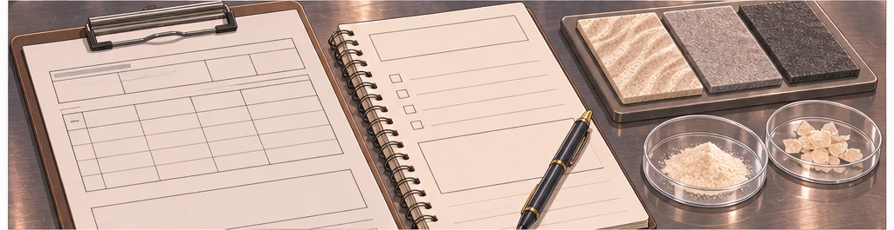
감상 옆에 기록이 쌓였다.14
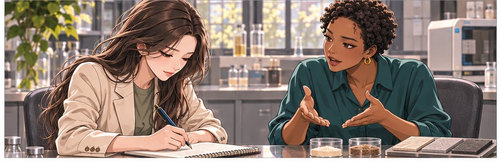
대표가 모른다고 말할수록 팀의 설명은 구체적이 됐다.15
첫 샘플
기다리던 첫 샘플이 도착했다.16
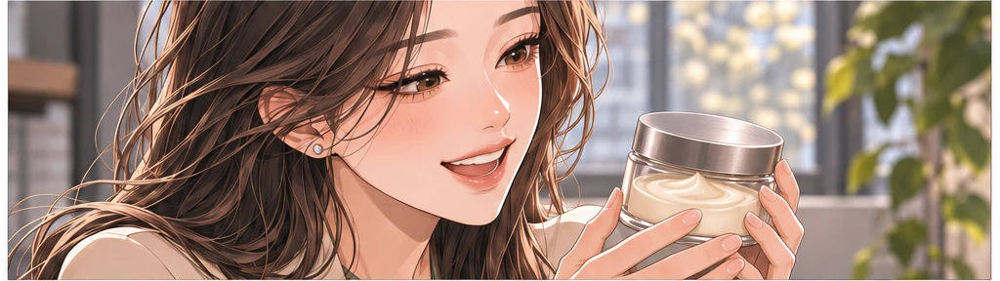
미아: 진짜 손에 잡히네요.17나디아 브룩스: 기쁜 날이지만 끝난 날은 아니에요.18
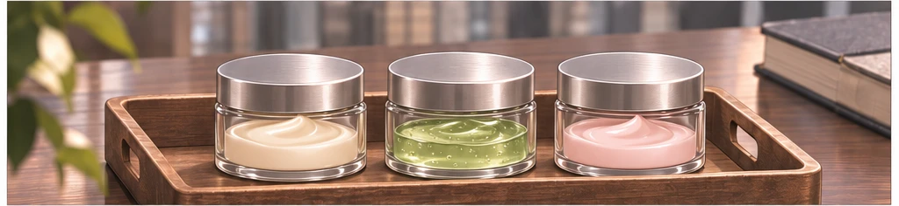
출시까지 넘어야 할 단계는 아직 남아 있었다.19미아: 좋아요. 다음 질문부터 해요.20
마음에 들지 않는 답
반응은 미아가 바란 방향으로만 오지 않았다.21
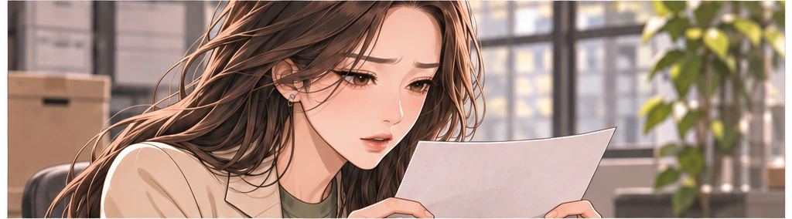
미아: 발림은 좋은데 마무리가 불편하다는 의견이 있네요.22
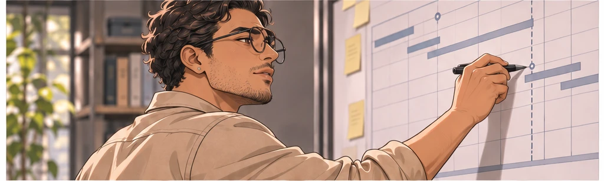
다니엘 모랄레스: 다시 만들면 일정이 밀립니다.23
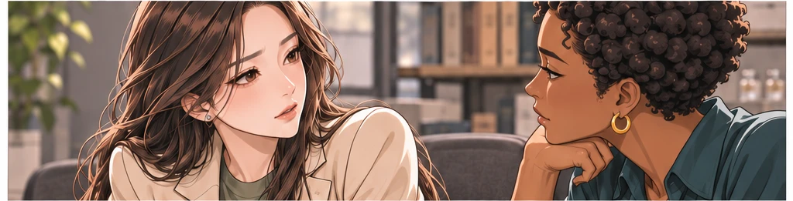
미아: 지금 고칠 수 있는 부분부터 알려주세요.24좋은 소식을 기다리던 회의는 긴 검토로 바뀌었다.25
미루는 용기
미아: 처음부터 늦는 회사가 되면 어쩌죠.26아빠: 늦는 이유를 설명할 수 있는 회사는 될 수 있겠지.27미아: 대표면 자신 있어 보여야 하잖아요.28아빠: 확인하지 않은 것을 확신하는 게 자신감은 아니니까.29
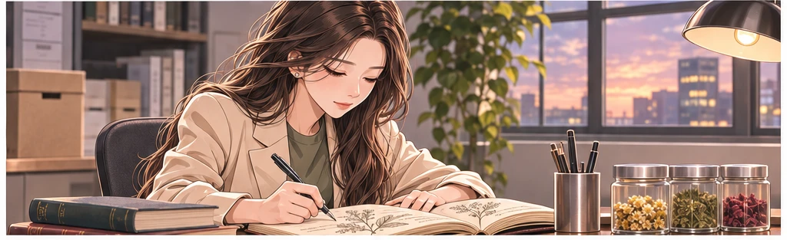
미아는 출시일보다 먼저 설명문을 고쳤다.30
기다리는 사람에게
미아: 예고했던 일정이 늦어지게 됐어요.31미아: 확인하고 고칠 부분이 남아 있어요. 기다리게 해서 미안합니다.32멋진 홍보 영상 대신 현재 상황을 알렸다.33
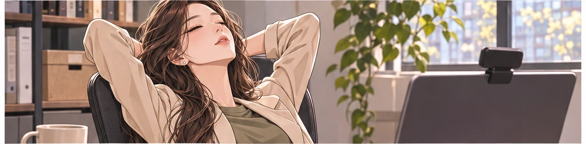
미아: 말하고 나니까 더 무섭네요.34엄마: 그래도 혼자 숨기고 있지는 않네.35
작은 비용들
날짜가 밀리는 동안 비용은 기다려주지 않았다.36
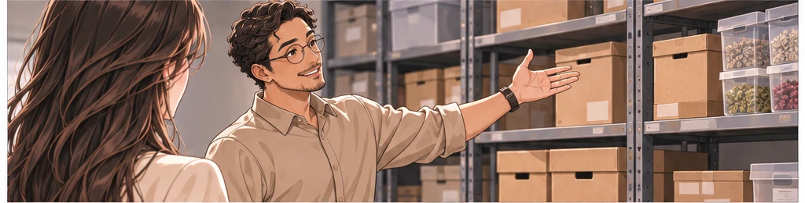
다니엘 모랄레스: 여기서 줄일 수 있는 것부터 정해야 해요.37
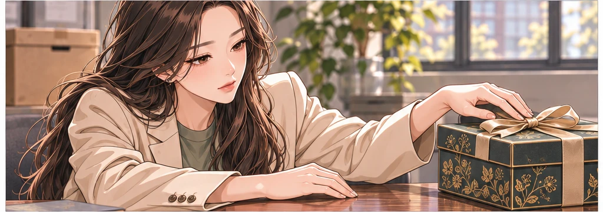
미아: 포장은 간소하게 가죠. 확인 과정은 줄이지 말고요.38반짝이는 겉모습이 가장 먼저 책상에서 내려왔다.39팀은 다시, 할 수 있는 일을 나누었다.40
다시 만드는 날
수정은 한 번에 끝나지 않았다.41미아: 이번에는 어떤 부분이 달라졌나요?42
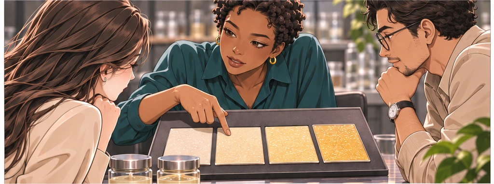
나디아 브룩스: 같은 조건에서 다시 확인해보죠.43
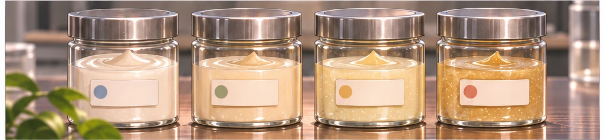
좋아졌다는 말 뒤에 과정을 남겼다.44조금씩 설명할 수 있는 제품이 되었다.45
첫 출고
그리고 첫 출고를 준비하는 아침이 왔다.46미아: 이 상자 왜 저만 접으면 삐뚤죠?47
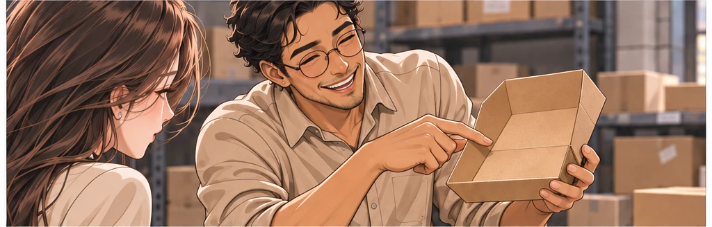
다니엘 모랄레스: 대표님도 첫날이잖아요.48처음 배우는 일은 여전히 많았다.49
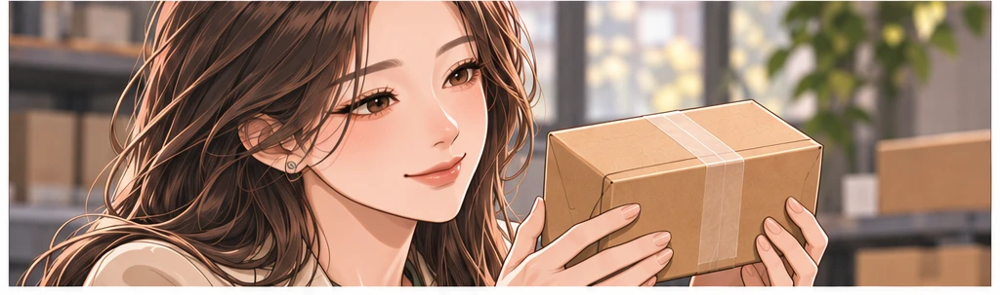
상자 하나에도 여러 사람의 시간이 들어 있었다.50
다시 오는 상자
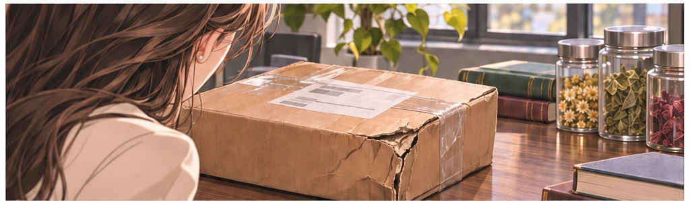
모든 상자가 환영받은 것은 아니었다.51다니엘 모랄레스: 배송 중 포장이 손상됐다는 연락입니다.52미아: 고객에게 먼저 상황을 확인해 주세요.53누구 책임인지 따지는 것보다 다음 배송을 바꾸는 일이 먼저였다.54미아: 불편을 알려주셔서 감사합니다. 처리 과정을 안내드릴게요.55
고맙다는 말의 무게
며칠 뒤 같은 고객에게서 답장이 왔다.56제품보다 답변이 먼저 기억에 남았어요.57미아: 이 말은 다 같이 봐야겠어요.58성공이라고 부르기엔 아직 작은 숫자였다.59함께 지킨 약속으로는 충분히 큰 일이었다.60
대표가 듣는 시간
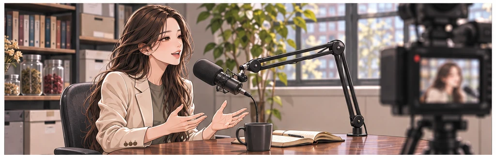
미아: 사람들이 원하는 걸 안다고 생각했어요.61
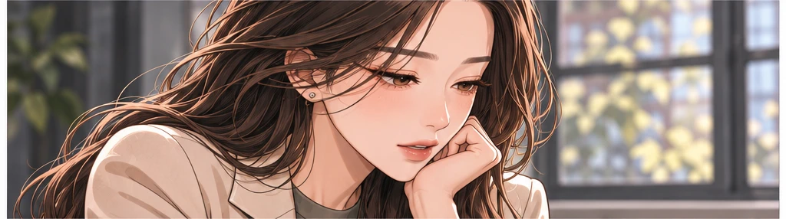
미아: 회사 만들고 나니까 더 물어봐야 한다는 걸 알겠더라고요.62처음의 공책은 사무실에서도 자리를 잃지 않았다.63에이미 카터: 그럼 이번 질문은 제가 먼저 해도 될까요?64미아: 네. 오늘은 제가 들을 차례네요.65
닫히는 문
기대했던 큰 거래가 마지막 단계에서 멈췄다.66다니엘 모랄레스: 다음 분기 계획을 다시 짜야겠습니다.67미아: 다들 믿고 따라왔는데.68나디아 브룩스: 아직 같이 결정할 수 있잖아요.69회사는 처음으로 긴 겨울을 준비했다.70
첫 약속을 펴다
미아의 기도: 하나님, 커지는 일보다 지켜야 할 것을 보게 해주세요.71미아는 처음 적었던 약속을 다시 펼쳤다.72미아: 내일 팀부터 만나야겠다.73그때, 오랫동안 답이 없던 연락 하나가 도착했다.74